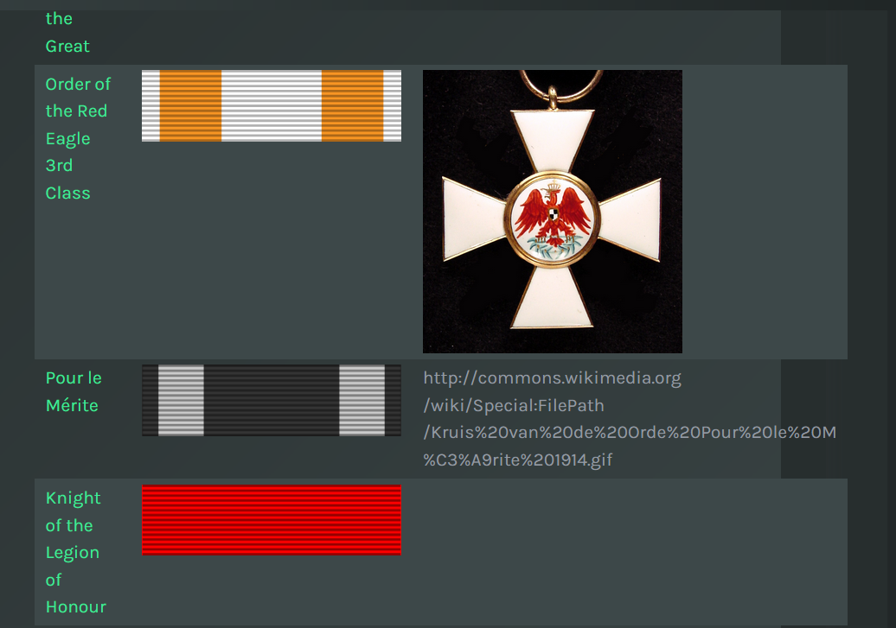

TOOLS, METODOLOGY and CHALLENGES
TOOLS:
For the realization of this project, it has been necessary to exploit several tools.
First of all, to build the queries necessary to explore the knowledge bases and to retrieve the data, we used:
- The Polifonia Corpus which has been consulted using the MusicBO module;
- Fred which has proved to be useful to build queries from the MusicBo knowledge base;
- Wikidata repository of knowledge and the Wikidata Query Service that runs the query against the Wikidata dataset to display the results.
In a second moment, we used Melody (Make mE a Linked Open Data storY) to create our three web-ready interactive data stories.
In conclusion, once the stories were completed, we used GitHub to create a shared repository including the articles which describe the project, focusing on both the stories and the methodology adopted.
METHODOLOGY:
All the groups followed similar paths.
The first step was the exploration of the knowledge bases by looking for general concepts, like people and instruments, and then we gradually narrowed down the research.
More precisely:
- The first group started searching for string instruments and bowed string instruments, finally choosing the violin as it was the most represented instrument in this category.
- The second group started looking for keyboard instruments and eventually chose the piano as it was the richest in information.
- The third group started searching for people, then artists, and composers, finally choosing Gaspare Spontini as the subject of the story.
After choosing the subject of the stories, we then deepened our research using Wikidata and we started creating sparql queries both using the MusicBO and Wikidata endpoint.
The queries were built with the aim to retrieve the data present in the two knowledge databases. They were either built starting from a piece of information that we already knew by consulting the Wikidata page of our subjects, or on the base of hypothetical scenarios, querying the repository to retrieve more complex information.
All queries were designed in accordance with the kind of information we wanted to represent, choosing the operators and the semantics accordingly.
More precisely we used:
- The aggregate functions of COUNT and GROUP BY to build queries whose aim was to retrieve the total number of elements grouped together and not a simple list of all the results;
- The modifier DISTINCT to eliminate the duplicate results;
- In some cases, it has been necessary to use QUALIFIERS when we wanted to retrieve more details that couldn’t be summarized in a single triple. Indeed, qualifiers allow statements to be expanded beyond what can be expressed in a simple property value pair. They are used in order to provide additional information and better define the value of a property given in a statement;
- The LIMIT clause was necessary to better sort the list of results, often used together with the operator ORDER BY;
- The clause FILTER (condition) was inserted into some queries in order to obtain more specific results;
- The operator OPTIONAL was used to not limit the list of potential results, including also those which match only some of the properties present in the query.
At this point, we designed an article-like data story, combining textual information with statistical components, such as counters, charts, tables, text search and maps to create a sequential narrative.
In conclusion, after saving and publishing our stories on Melody, the last step was the creation of a public and shared repository on GitHub, composed of a main page, the three articles and this report. We then created an additional file called “style.css” with the aim of defying the style of each website page in an external file.
CHALLENGES
Every couple faced similar challenges:
- For what concerns MusicBO, we noticed a shortage of data since we had some difficulties retrieving data about our subjects. For this reason, we found it necessary to deepen our research using also Wikidata, to collect additional information for our stories.
- Sometimes the results on Wikidata of the query were not coherent with the reality of facts, so we had to create more specific queries in order to filter the results and retrieve only the one we were interested in.
More specific difficulties concerning Wikidata:
- Initially, in the query about the awards won by Gaspare Spontini, which we used to build a table on Melody, we could not visualize all the images related to the ribbons and medals. As you can see from the screenshot, some of the images are shown as links.
However, if we try to modify the story on Melody and on the webpage, it shows all the images except the one for the award “Pour le Mérite” as we can see in the following screenshot.

This situation is probably due to the potential issue as stated on Wikidata.
- Another problem related to the biography of Gaspare Spontini is that in Wikidata there are two different places of death, one is Maiolati Spontini and the other is Ancona. This fact is probably due to two different sources one more specific than the other, as Maiolati Spontini is in the province of Ancona.
- On Melody, we encountered a major technical issue: if you want to eliminate or change the position of the templates, the process is cumbersome (sometimes it deleted the query, and sometimes it does not make you do that action).
- In conclusion, for what concerns GitHub, we want to report some aspects that could be improved. These concern the possibility to embed the statistical component of the story into the articles on GitHub. First, the embed option isn’t available for all the components, but only for charts and tables. Second, it works properly only to embed table components and even in this case the result does not respect the layout of the chart. Moreover, we spotted a problem concerning charts. In particular for line charts, even though the embed option is available, the only thing we succeeded to export was the background of the chart, but it was missing the values.
The image on the right shows how the line chart is on Melody. Whereas on the left you can see how it is exported on GitHub. To address this problem, we decided to make screenshots of the charts and include them in the article as images.
These are the links to the articles' pages:
Exploring musical instruments: The violin
Exploring musical instruments: The piano
Gaspare Spontini: An 18th century Italian composer